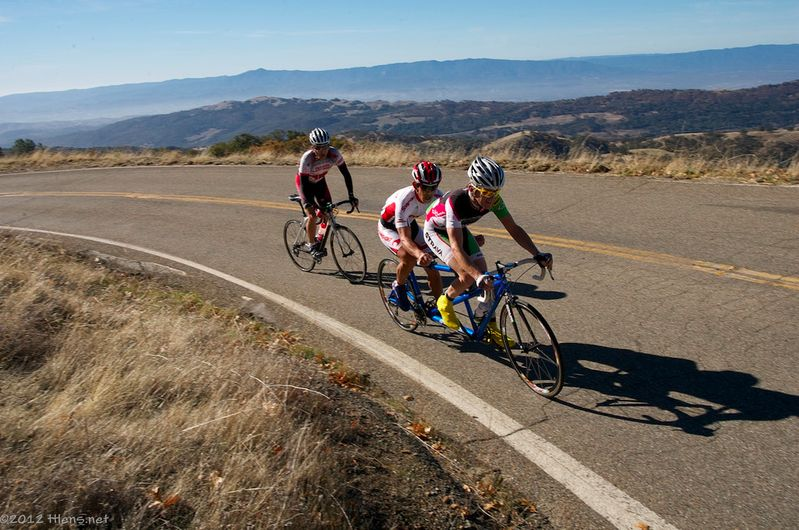

|
 |
|  |
| Paul McKenzie and Paul Chuck ride their tandem to the Low-Key overall series first place in the tandem division (Josh Hadley) |
Thanksgiving means Low-Key, and Low-Key means perfect weather, and today was a perfect day for climbing!
There was an excellent Low-Key turnout this morning on the mountain. Once again, Ryan Sherlock and Melanie Spath made the trip over the pond from their native Ireland where Ryan is the reigning hillclimb champion and Melanie the reigning time trial champion. But this year while Melanie was once again able to lead the women to the Observatory, Ryan found his match (at least for the day) in Low-Key super-junior Adrian Costa. Costa sealed the deal on his Low-Key series victory with a Low-Key course record and Strava KOM on the climb. Ryan also beat the existing marks. Third place among the men was multi-time Canadian time trial champion (now retired) Eric Wohlberg, while fourth was another top Low-Key junior, Andrew Biscardi. The series leader after last week's climb, Clark Foy, finished a super fifth place. Series leader Lisa Penzel finished third today to cap off her incredible season this year, winning the women's overall, while Katelyn Connell took the second spot up Hamilton, leading the scoring for team GPC Dream Team.
Another super junior result came Kristin Wolfe, only 14, who climbed the hill in a remarkable 2:06.
In the team competition, it has been a year of Low-Key domination for Team Brown Zone, and led by one-day-recruit Eric Wohlberg, the team finished off what they began so strongly at Montebello by taking the team win at Mt Hamilton. The race for second between Western Wheelers and Sisters and Misters was fierce, though, with Western Wheelers just holding off the sisters to take the second spot both for the day and for the final standings. Third place on the day's team standings was the GPC Dream Team, their first top placing this year.
Bill Bushnell got back off his feet after Kennedy and into his hybrid-electric for a typically excellent time up the mountain today. Bill wins the hybrid-electric division for the seventh year in a row. Bill's been an enormous contribution to the series, both in organizing, photography, and in his participation. We always welcome hybrids at Low-Key, so readers out there should bring theirs along next year!!!
For the first time ever, Low-Key had a runner at Hamilton! Matt Allie blitzed the 30 km course in an excellent time of 2:23:10. Unfortunately Low-Key's bike-based scoring system doesn't do justice to Matt's achievement, since runners are at such a disadvantage on downhills.
In our first tandem division since 1998, Paul Chuck and Paul McKenzie rode thier tandem to to the observatory in impressive time to take the overall series lead. Dan and Winnie Brehmer were second both for the week and the overall.
Finally, in the all-important Endurance Competition, it was Stephen Fong finishing up 8-for-8 to take the prize.
In addition to our usual donations to the LiveStrong Foundation and the Peninsula Open Space Trust, Low-Key is donated $1/rider today to the Friends of Lick. We appreciate all they do and thank the Observatory for welcoming visitors to their gorgeous location on Thanksgiving!
For our top 3 men, top 3 women, and Endurance Award champions Pen Velo is once again providing free entry into the San Bruno Hillclimb on 1 Jan! Entry codes will be provided via email.
A huge thanks today to coordinator Kevin Winterfield, results coordinator Howard Kveck, money coordinator Patt Baenen, and super-volunteer Pat Parseghian for making today's climb such a spectacular success.
Strava T-shirt qualifiers indicated with orange background. Note riders can only qualify once per series, so may not be listed even if they beat the target time for this week.
| pl | # | name | team | cat | time | mph | fph | score |
|---|---|---|---|---|---|---|---|---|
| 1 | 852 | Melanie Spath | Cycleways CC | 30+ | 83:08 | 13.28 | 3175 | 131.01 |
| 2 | 207 | Katelyn Connell | GPC Dream Team | 30+ | 86:08 | 12.82 | 3064 | 126.46 |
| 3 | 129 | Lisa Penzel | The Brown Zone | 45+ | 88:55 | 12.42 | 2968 | 122.51 |
| 4 | 113 | Ginger Kroft | Western Wheelers | 40+ | 94:26 | 11.69 | 2795 | 115.37 |
| 5 | 8 | Janet Martinez | Sr's & Mr's of No Mercy | 97:15 | 11.35 | 2714 | 112.03 | |
| 6 | 403 | Roxy Brown | The Brown Zone | 40+ | 97:42 | 11.30 | 2702 | 111.52 |
| 7 | 404 | Sugar Brown | The Brown Zone | Brown | 98:59 | 11.15 | 2667 | 110.08 |
| 8 | 805 | Beverly Chaney | CyclesFANATIC | 45+ | 105:19 | 10.48 | 2506 | 103.47 |
| 9 | 828 | Jennifer Kalich | LGBRC | 35+ | 106:11 | 10.40 | 2486 | 102.63 |
| 10 | 79 | Lisa Emmerich | Sr's & Mr's of No Mercy | 50+ | 107:27 | 10.27 | 2456 | 101.42 |
| 11 | 422 | Sandra King | Team Fremont FFBC p/b Chipotle | 40+ | 110:48 | 9.96 | 2382 | 98.36 |
| 12 | 864 | Kristin Wolfe | San Jose Bike Club | Junior | 126:36 | 8.72 | 2085 | 86.11 |
| 13 | 50 | Alison Chaiken | Sr's & Mr's of No Mercy | 50+ | 133:18 | 8.28 | 1980 | 81.79 |
| 14 | 440 | Darlene Stevenson | 40+ | 134:51 | 8.19 | 1957 | 80.85 | |
| 15 | 842 | Maria T. Garcia de la Noceda | Grizzly Peak Cyclists | 65+ | 147:50 | 7.47 | 1785 | 73.77 |
| 16 | 150 | Laura Spano | Undiscovered Country | Slow & Steady | 148:47 | 7.42 | 1774 | 73.30 |
| 17 | 853 | Sara Stearns | 35+ Master | 4 | 152:55 | 7.22 | 1726 | 71.32 |
reference time for division Women = 108:58
| pl | # | name | team | cat | time | mph | fph | score |
|---|---|---|---|---|---|---|---|---|
| 1 | 69 | Adrien Costa | Slipstream-Craddock Jr. Development | Junior | 69:46 | 15.82 | 3783 | 129.42 |
| 2 | 849 | Ryan Sherlock | Cycleways CC | 30+ | 70:19 | 15.70 | 3754 | 128.41 |
| 3 | 862 | Eric Wohlberg | The Brown Zone | 71:25 | 15.46 | 3696 | 126.44 | |
| 4 | 202 | Andrew Biscardi | Tieni Duro | Junior 17/18 | 72:52 | 15.15 | 3622 | 123.93 |
| 5 | 212 | Clark Foy | Western Wheelers | 45+ | 74:02 | 14.91 | 3565 | 121.98 |
| 6 | 44 | Ciaran Byrne | Sr's & Mr's of No Mercy | 40+ | 74:50 | 14.75 | 3527 | 120.68 |
| 7 | 38 | Rich Brown | The Brown Zone | 35+ | 75:27 | 14.63 | 3498 | 119.69M |
| 8 | 149 | Daryl Spano | San Jose Bike Club | 45+ | 75:30 | 14.62 | 3496 | 119.62 |
| 9 | 131 | Josh Pizzica | Gene-Solve/Etxea | 35+ | 76:41 | 14.40 | 3442 | 117.77 |
| 10 | 433 | Dan Perry | Bike Trip/Symantec | 40+ | 77:20 | 14.28 | 3413 | 116.79 |
| 11 | 438 | Kieran Sherlock | Western Wheelers | 45+ | 77:28 | 14.25 | 3407 | 116.58 |
| 12 | 172 | Morgan Raines | Bike Trip/Symantec | 40+ | 77:37 | 14.22 | 3401 | 116.36 |
| 13 | 95 | Jared Hudson | SquadraSF | 30+ | 77:45 | 14.20 | 3395 | 116.16 |
| 14 | 837 | Greg McQuaid | Western Wheelers | 40+ | 77:48 | 14.19 | 3393 | 116.09 |
| 15 | 239 | Dennis Van Hoof | Type 1 Diabetes | 35+ | 77:49 | 14.19 | 3392 | 116.06 |
| 16 | 816 | Chris Evans | Pen Velo/Pomodoro | 30+ | 77:50 | 14.18 | 3391 | 116.04 |
| 17 | 443 | H Two Brown | The Brown Zone | 50- | 77:52 | 14.18 | 3390 | 115.99 |
| 18 | 421 | Mark King | Team Fremont FFBC p/b Chipotle | 45+ | 77:55 | 14.17 | 3387 | 115.91 |
| 19 | 319 | Brian Schuster | Dolce Vita Cycling | 25+ | 78:08 | 14.13 | 3378 | 115.59 |
| 20 | 831 | Jonathan Krier | Fremont Bank | 3 | 78:34 | 14.05 | 3359 | 114.96 |
| 21 | 222 | Weston Lane | GPC Dream Team | 25+ | 78:35 | 14.05 | 3359 | 114.93 |
| 22 | 213 | Chris Furgiuele | Dolce Vita Cycling | 35+ | 81:33 | 13.54 | 3237 | 110.76 |
| 23 | 310 | Steve Fielding | team batson | 45+ | 81:40 | 13.52 | 3232 | 110.60 |
| 24 | 175 | Alexander Komlik | San Jose Bike Club | 45+ | 82:46 | 13.34 | 3189 | 109.14 |
| 25 | 607 | Benjamin Dorfan | Unattached | 5 | 82:50 | 13.33 | 3186 | 109.05 |
| 26 | 834 | John Lem | Team Fremont FFBC p/b Chipotle | 45+ | 83:20 | 13.25 | 3167 | 108.39 |
| 27 | 838 | Jason Milliron | Pen Velo/Pomodoro | 30+ | 83:31 | 13.22 | 3160 | 108.16 |
| 28 | 97 | Martin Hyland | Western Wheelers | 55+ | 83:37 | 13.20 | 3157 | 108.03 |
| 29 | 142 | Naoto Sato | 45+ | 83:54 | 13.16 | 3146 | 107.66 | |
| 30 | 822 | Eric Hahn | Dos | 35+ | 84:34 | 13.05 | 3121 | 106.82 |
| 31 | 844 | John Pidoli | slayer rc | 45+ | 84:41 | 13.04 | 3117 | 106.67 |
| 32 | 841 | Clark Natwick | Pen Velo/Pomodoro | 50+ | 85:01 | 12.99 | 3105 | 106.25 |
| 33 | 49 | Nathan Cauffman | 30+ | 85:19 | 12.94 | 3094 | 105.88 | |
| 34 | 821 | Arturo B Galindo | San Jose Bike Club | 45+ | 85:25 | 12.92 | 3090 | 105.76 |
| 35 | 614 | Miro Miklos | 30+ | 85:29 | 12.91 | 3088 | 105.67 | |
| 36 | 860 | Juan Vasquez | Team Vasquez | 35+ | 85:35 | 12.90 | 3084 | 105.55 |
| 37 | 807 | Tom Christiansen-Salameh | 20+ | 85:35 | 12.90 | 3084 | 105.55 | |
| 38 | 78 | Bill Dvorak | 55+ | 85:47 | 12.87 | 3077 | 105.31 | |
| 39 | 138 | Dave Rossow | 40+ | 85:56 | 12.85 | 3071 | 105.12 | |
| 40 | 829 | David Kelly | Team Kelly | 35+ | 85:57 | 12.84 | 3071 | 105.10 |
| 41 | 41 | Ron Brunner | The Brown Zone | 40+ | 86:03 | 12.83 | 3067 | 104.98M |
| 42 | 214 | Patrick Gordis | GPC Dream Team | 45+ | 86:09 | 12.81 | 3064 | 104.86 |
| 43 | 130 | Jim Perreira | 45+ | 86:30 | 12.76 | 3051 | 104.44 | |
| 44 | 612 | Brian Johnston | JahWind | 50+ | 86:36 | 12.75 | 3048 | 104.31 |
| 45 | 503 | Oliver R. Barajas | Eden Bicycles | Junior | 86:37 | 12.75 | 3047 | 104.29 |
| 46 | 427 | Scott Martin | Bike Trip/Symantec | 55+ | 86:46 | 12.72 | 3042 | 104.11 |
| 47 | 419 | Sunil Jagadish | San Jose Bike Club | 25+ | 86:56 | 12.70 | 3036 | 103.92 |
| 48 | 515 | Martin Pieprzyk | Type 1 Diabetes | 87:14 | 12.66 | 3026 | 103.56 | |
| 49 | 832 | West Kurihara | Team Fremont FFBC p/b Chipotle | 50+ | 87:26 | 12.63 | 3019 | 103.32 |
| 50 | 608 | Klaus Fleischmann | 40* | 87:31 | 12.61 | 3016 | 103.22 | |
| 51 | 704 | Lucas Pereira | 35+ | 87:51 | 12.57 | 3004 | 102.83 | |
| 52 | 315 | Chris Mickelsen | Western Wheelers | 55+ | 87:58 | 12.55 | 3000 | 102.70 |
| 53 | 223 | Liehann Loots | 35+ | 89:10 | 12.38 | 2960 | 101.32 | |
| 54 | 99 | Peter Ingram | Ind. | 55+ | 89:31 | 12.33 | 2949 | 100.92 |
| 55 | 847 | Michael J Salameh | 55+ | 90:05 | 12.26 | 2930 | 100.29 | |
| 56 | 817 | Bob Fetherston | Monta Vista Velo | 60+ | 90:11 | 12.24 | 2927 | 100.18 |
| 57 | 104 | Anthony Jawad | 25+ | 90:15 | 12.23 | 2925 | 100.11M | |
| 58 | 905 | French Clements | 30+ | 90:16 | 12.23 | 2924 | 100.09 | |
| 59 | 818 | Matt Fisher | 90:18 | 12.23 | 2923 | 100.05 | ||
| 60 | 226 | Steven Mielich | San Jose Bike Club | 50+ | 90:20 | 12.22 | 2922 | 100.01 |
| 61 | 242 | Aki Yamakawa | 35+ | 90:21 | 12.22 | 2921 | 99.99 | |
| 62 | 240 | David Vrane | Sr's & Mr's of No Mercy | 45+ | 90:51 | 12.15 | 2905 | 99.45 |
| 63 | 161 | Alan Weatherall | San Jose Bike Club | 50+ | 90:57 | 12.14 | 2902 | 99.34 |
| 64 | 861 | Brandon West | The Awesomologists | 30+ | 91:09 | 12.11 | 2896 | 99.12 |
| 65 | 75 | Giles Douglas | 35+ | 91:09 | 12.11 | 2896 | 99.12 | |
| 66 | 156 | Toshi Tajima | 45+ | 91:09 | 12.11 | 2896 | 99.12 | |
| 67 | 858 | John Toor | 50+ | 91:51 | 12.02 | 2874 | 98.37 | |
| 68 | 856 | Michael Tauber | Pen Velo/Pomodoro | 45 Cat 4 | 91:52 | 12.02 | 2873 | 98.35 |
| 69 | 159 | Plamen Velikov | SLACer | 92:14 | 11.97 | 2862 | 97.96 | |
| 70 | 820 | Chris Gaitos | Team Fremont FFBC p/b Chipotle | 92:18 | 11.96 | 2860 | 97.89 | |
| 71 | 806 | Vincent Chiu | UCSB Cycling | 5 | 92:19 | 11.96 | 2859 | 97.87 |
| 72 | 846 | Bill Preucel | Sr's & Mr's of No Mercy | 45+ | 92:21 | 11.95 | 2858 | 97.83 |
| 73 | 24 | Jim Batson | Team Wild Hare | 40+ | 92:36 | 11.92 | 2850 | 97.57 |
| 74 | 81 | Rick Ferrell | Bike Trip/Symantec | 50+ | 93:33 | 11.80 | 2821 | 96.58 |
| 75 | 519 | Peter Tapscott | Webcor | 60+ | 94:07 | 11.73 | 2804 | 96.00 |
| 76 | 110 | Franz Kelsch | Pan y Agua | 65 Almost | 94:15 | 11.71 | 2800 | 95.87 |
| 77 | 442 | Matt Wittmann | 25+ | 94:17 | 11.71 | 2799 | 95.83 | |
| 78 | 36 | Bobby Brown | The Brown Zone | 50+ | 95:14 | 11.59 | 2772 | 94.88 |
| 79 | 437 | Eddie Santos | 25+ | 95:17 | 11.59 | 2770 | 94.83 | |
| 80 | 700 | Gino Cetani | solo | 40+ | 96:23 | 11.45 | 2738 | 93.75 |
| 81 | 52 | Eric Chao | 97:12 | 11.36 | 2715 | 92.96 | ||
| 82 | 302 | John Armour | San Jose Bike Club | 50+ | 98:34 | 11.20 | 2678 | 91.68 |
| 83 | 147 | Jeff Shute | 30+ | 98:40 | 11.19 | 2675 | 91.58 | |
| 84 | 133 | Thomas Preisler | LGBRC | 55+ | 98:46 | 11.18 | 2672 | 91.49 |
| 85 | 819 | Andrew Fitzhugh | 98:46 | 11.18 | 2672 | 91.49 | ||
| 86 | 135 | Mihai R. | 30+ | 98:47 | 11.18 | 2672 | 91.48 | |
| 87 | 45 | Pat Callahan | Quadzilla Racing | 40+ | 98:59 | 11.15 | 2667 | 91.29 |
| 88 | 1002 | Julio Echeverria | 99:24 | 11.11 | 2655 | 90.91 | ||
| 89 | 811 | Jay Dillon | Rio Strada Racing | 40+ | 99:31 | 11.09 | 2652 | 90.80 |
| 90 | 401 | Nick Bellomo | Type 1 Diabetes | 30+ | 99:51 | 11.06 | 2643 | 90.50 |
| 91 | 77 | Frank Drobot | Western Wheelers | 60+ | 100:20 | 11.00 | 2631 | 90.07 |
| 92 | 65 | Kevin Comerford | Sr's & Mr's of No Mercy | 30+ | 101:15 | 10.90 | 2607 | 89.25 |
| 93 | 67 | Richard Contreras | Team Rhus | 55+ | 101:20 | 10.89 | 2605 | 89.18 |
| 94 | 102 | Tom Jakaby | Buycell/Jakaby Engineering | 50+ | 101:23 | 10.89 | 2603 | 89.14 |
| 95 | 827 | Menko Johnson | Pen Velo/Pomodoro | 40+ | 101:36 | 10.87 | 2598 | 88.95 |
| 96 | 824 | Morten Jensen | 45+ | 102:26 | 10.78 | 2577 | 88.22 | |
| 97 | 83 | Dave Fitch | Pan y Agua | 70+ | 102:40 | 10.75 | 2571 | 88.02 |
| 98 | 58 | Kevin Colagiovanni | Team DUD | 25+ | 103:44 | 10.64 | 2544 | 87.12 |
| 99 | 801 | Chris Bautista | 40+ | 103:47 | 10.64 | 2543 | 87.08 | |
| 100 | 857 | Warrick Taylor | Pen Velo/Pomodoro | 45+ | 104:32 | 10.56 | 2525 | 86.45 |
| 101 | 127 | Bart Niechwiej | 35+ | 105:05 | 10.51 | 2512 | 86.00 | |
| 102 | 626 | Larry Klein | GOM | 50+ | 105:08 | 10.50 | 2511 | 85.96 |
| 103 | 206 | Jay Cohan | Spike the Wonder Dog | 45+ | 106:11 | 10.40 | 2486 | 85.11 |
| 104 | 174 | Norbert Kappel | San Jose Bike Club | 55+ | 106:46 | 10.34 | 2472 | 84.65 |
| 105 | 622 | Walter Wang | 40+ | 107:28 | 10.27 | 2456 | 84.10 | |
| 106 | 441 | Han Wen | GOM | 40+ | 109:44 | 10.06 | 2405 | 82.37 |
| 107 | 84 | Stephen Fong | CyclePath Racing | 45+ | 110:47 | 9.97 | 2382 | 81.59 |
| 108 | 405 | Steve Bursley | Team Wild Hare | 45+ | 111:24 | 9.91 | 2369 | 81.14 |
| 109 | 251 | Vu Ha | 40+ | 111:25 | 9.91 | 2369 | 81.13 | |
| 110 | 169 | Nic Brummell | Atlas | 50+ | 118:06 | 9.35 | 2235 | 76.54M |
| 111 | 148 | Gregory P. Smith | 35+ | 123:23 | 8.95 | 2139 | 73.27 | |
| 112 | 863 | Jordan Wolfe | San Jose Bike Club | 4 | 124:04 | 8.90 | 2127 | 72.87 |
| 113 | 815 | Peter Ebert | 124:35 | 8.86 | 2119 | 72.57 | ||
| 114 | 810 | Jeromy Cottell | Pen Velo/Pomodoro | 35+ | 125:08 | 8.82 | 2109 | 72.25 |
| 115 | 826 | Steve Jeschien | 55+ | 127:29 | 8.66 | 2070 | 70.92 | |
| 116 | 813 | Iran eloin Duran | iran | 30+ | 128:05 | 8.62 | 2061 | 70.59 |
| 117 | 68 | Alex Cortez | Team Fremont FFBC p/b Chipotle | 40+ | 129:14 | 8.54 | 2042 | 69.96 |
| 118 | 812 | Matthew Donne | Type 1 Diabetes | 25+ | 130:02 | 8.49 | 2030 | 69.53 |
| 119 | 605 | Bob Corman | Spike the Wonder Dog | 55+ | 131:30 | 8.40 | 2007 | 68.76 |
| 120 | 808 | Marty Chuck | The Flying Gumbys | 55+ | 140:40 | 7.85 | 1876 | 64.29 |
| 121 | 845 | Mark Powers | Pen Velo/Pomodoro | 55+ | 147:13 | 7.50 | 1793 | 61.43 |
| 122 | 830 | Kerry Kreczmer | 35+ | 148:11 | 7.45 | 1781 | 61.04 | |
| 123 | 859 | Alex Valiansky | Velo Club Monterey | 60+ | 150:57 | 7.31 | 1749 | 59.92 |
reference time for division Men = 90:20
| pl | # | name | team | cat | time | mph | fph | score |
|---|---|---|---|---|---|---|---|---|
| 1 | 406 | Paul Chuck | Sr's & Mr's of No Mercy | 55+ | 87:47 | 12.58 | 3007 | 102.91 |
| 429 | Paul McKenzie | Sr's & Mr's of No Mercy | 55+ | |||||
| 2 | 32 | Dan Brehmer | SLACer | 45+ | 108:00 | 10.22 | 2444 | 92.30 |
| 33 | Winnie Lam Brehmer | SLACer | Stoker |
| pl | # | name | team | cat | time | mph | fph | score |
|---|---|---|---|---|---|---|---|---|
| 1 | 6 | Bill Bushnell | Low-Key | It's Mostly The Bike | 52:50 | 20.90 | 4996 | 99.36 |
reference time for division Hybrid Electric = 52:29
| pl | # | name | team | cat | time | mph | fph | score |
|---|---|---|---|---|---|---|---|---|
| 1 | 201 | Matt Allie | Labor Power | 35+ | 143:10 | 7.71 | 1844 | 63.17 |
reference time for division Male Runner = 90:20
| pl | team | score | riders |
|---|---|---|---|
| 1 | The Brown Zone | 368.64 | Eric Wohlberg, Rich Brown, H Two Brown, Ron Brunner, Lisa Penzel, Bobby Brown, Roxy Brown, Sugar Brown |
| 2 | Western Wheelers | 354.65 | Clark Foy, Kieran Sherlock, Greg McQuaid, Martin Hyland, Chris Mickelsen, Ginger Kroft, Frank Drobot |
| 3 | GPC Dream Team | 346.25 | Weston Lane, Katelyn Connell, Patrick Gordis |
| 4 | Bike Trip/Symantec | 337.26 | Dan Perry, Morgan Raines, Scott Martin, Rick Ferrell |
| 5 | Sr's & Mr's of No Mercy | 335.62 | Ciaran Byrne, Paul Chuck, Paul McKenzie, David Vrane, Bill Preucel, Janet Martinez, Kevin Comerford, Lisa Emmerich, Alison Chaiken |
| 6 | San Jose Bike Club | 334.51 | Daryl Spano, Alexander Komlik, Arturo B Galindo, Sunil Jagadish, Steven Mielich, Alan Weatherall, John Armour, Norbert Kappel, Jordan Wolfe, Kristin Wolfe |
| 7 | Pen Velo/Pomodoro | 330.45 | Chris Evans, Jason Milliron, Clark Natwick, Michael Tauber, Menko Johnson, Warrick Taylor, Jeromy Cottell, Mark Powers |
| 8 | Team Fremont FFBC p/b Chipotle | 327.63 | Mark King, John Lem, West Kurihara, Chris Gaitos, Sandra King, Alex Cortez |
| 9 | Type 1 Diabetes | 310.12 | Dennis Van Hoof, Martin Pieprzyk, Nick Bellomo, Matthew Donne |
| 10 | 304.26 | Lucas Pereira, Liehann Loots, Anthony Jawad, Giles Douglas, Toshi Tajima, Jeff Shute, Mihai R., Bart Niechwiej, Gregory P. Smith | |
| 11 | SLACer | 282.55 | Plamen Velikov, Dan Brehmer, Winnie Lam Brehmer |
| 12 | Cycleways CC | 259.43 | Ryan Sherlock, Melanie Spath |
| 13 | Dolce Vita Cycling | 226.35 | Brian Schuster, Chris Furgiuele |
| 14 | LGBRC | 194.12 | Thomas Preisler, Jennifer Kalich |
| 15 | Pan y Agua | 183.89 | Franz Kelsch, Dave Fitch |
| 16 | Team Wild Hare | 178.71 | Jim Batson, Steve Bursley |
| 17 | GOM | 168.33 | Larry Klein, Han Wen |
| 18 | Spike the Wonder Dog | 153.87 | Jay Cohan, Bob Corman |
| 19 | Slipstream-Craddock Jr. Development | 129.42 | Adrien Costa |
| 20 | Tieni Duro | 123.93 | Andrew Biscardi |
| 21 | Gene-Solve/Etxea | 117.77 | Josh Pizzica |
| 22 | SquadraSF | 116.16 | Jared Hudson |
| 23 | Fremont Bank | 114.96 | Jonathan Krier |
| 24 | team batson | 110.60 | Steve Fielding |
| 25 | Unattached | 109.05 | Benjamin Dorfan |
| 26 | Dos | 106.82 | Eric Hahn |
| 27 | slayer rc | 106.67 | John Pidoli |
| 28 | Team Vasquez | 105.55 | Juan Vasquez |
| 29 | Team Kelly | 105.10 | David Kelly |
| 30 | JahWind | 104.31 | Brian Johnston |
| 31 | Eden Bicycles | 104.29 | Oliver R. Barajas |
| 32 | CyclesFANATIC | 103.47 | Beverly Chaney |
| 33 | Ind. | 100.92 | Peter Ingram |
| 34 | Monta Vista Velo | 100.18 | Bob Fetherston |
| 35 | Low-Key | 99.36 | Bill Bushnell |
| 36 | The Awesomologists | 99.12 | Brandon West |
| 37 | UCSB Cycling | 97.87 | Vincent Chiu |
| 38 | Webcor | 96.00 | Peter Tapscott |
| 39 | solo | 93.75 | Gino Cetani |
| 40 | Quadzilla Racing | 91.29 | Pat Callahan |
| 41 | Rio Strada Racing | 90.80 | Jay Dillon |
| 42 | Team Rhus | 89.18 | Richard Contreras |
| 43 | Buycell/Jakaby Engineering | 89.14 | Tom Jakaby |
| 44 | Team DUD | 87.12 | Kevin Colagiovanni |
| 45 | CyclePath Racing | 81.59 | Stephen Fong |
| 46 | Atlas | 76.54 | Nic Brummell |
| 47 | Grizzly Peak Cyclists | 73.77 | Maria T. Garcia de la Noceda |
| 48 | Undiscovered Country | 73.30 | Laura Spano |
| 49 | 35+ Master | 71.32 | Sara Stearns |
| 50 | iran | 70.59 | Iran eloin Duran |
| 51 | The Flying Gumbys | 64.29 | Marty Chuck |
| 52 | Labor Power | 63.17 | Matt Allie |
| 53 | Velo Club Monterey | 59.92 | Alex Valiansky |